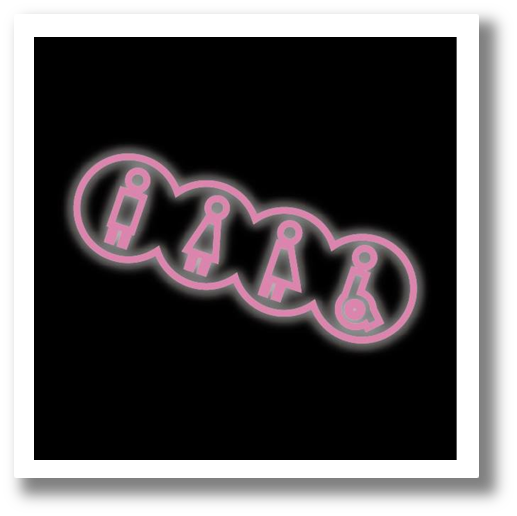

性別友善廁所的由來？

民國80年代前，由於男女廁數量相當且未考量到男女實際如廁時間的差異，導致女廁常有壅塞排隊的狀況。為因應此狀況，在90年代末期則發起了新女廁運動，利用通用設計的巧思、修改營建法規以及調整男女廁所數量比的方式來解決此問題。不僅改善了排隊的問題，更是幫助到父親攜帶幼女、母親攜帶幼子或需人陪同如廁的長者這樣的人們在公眾場合如廁的問題。
隨著社會風氣的逐漸開放化，跨性別族群和具中性氣質等等的少數性別族群也越發勇於表現自己的內心。可當遇到在公眾場合需要如廁的情況時卻由於法規仍是基於生理男性和女性的二分法為設計出發點，導致許多不便的情況發生，甚至引來他人的側目以及歧視行為。性別友善廁所正是以新女廁運動為雛形，為變裝者、跨性別、待陽剛氣質女同志者等星幣不服從者所規劃衍生出來的公共設施。
瞭解更多：
｜上廁所就上廁所，為什麼我們還需要「性別友善」廁所？